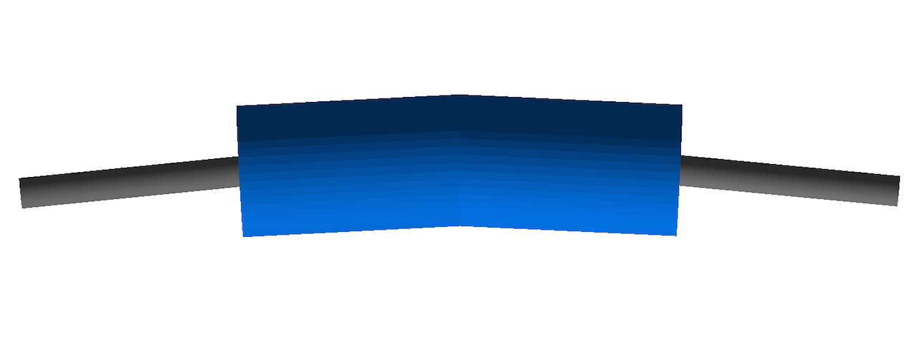

Geometry
In bdsim.cc, an instance of BDSDetectorConstruction is created and registered to the
Geant4 run manager.
The geometry is dynamically built based on information from the parser instance. BDSIM is designed to
build a model of an accelerator and, as such, creates a single beam line in order, element by element.
Each element is created using a component factory (BDSComponentFactory) to instantiate
the correct class and it is then placed in a holder (BDSBeamline) that calculates the
cumulative coordinates of the element in the world given the already created ones. It also keeps
track of the extent of the model. Optionally, the tunnel is built with respect to the beamline. Only
after these stages can an appropriately sized world volume be created. Each element in the beam line
is then placed into the world volume. Ultimately, the fully constructed world volume (and therefore all
of its contents - the accelerator model) is returned to Geant4, which then handles it for the simulation.
Beam Line Calculations
As well as being a vector of the beam line elements, when each BDSAcceleratorComponent
is added to the beam line, the coordinates that should be placed in the world that represent
that element’s position in the beam line are calculated. The rotation matrices and positions for
the beginning, middle and end are stored along with the BDSAcceleratorComponent instance
in a BDSBeamlineElement instance. A further subtlety is that any one element can be offset or
tilted with respect to the accelerator curvilinear reference (‘design’) trajectory, so the originals
are stored under the name ‘reference’ and the final positions (incorporating tilts and offsets)
are recorded without name.
Assumptions About Geometry
The coordinate calculation is simplified to a degree, with a few basic assumptions about how any one component affects the reference (‘design’) trajectory.
A BDSAcceleratorComponent advances the reference trajectory by a length \(l\).
A BDSAcceleratorComponent may change the outgoing angle of the reference trajectory by angle \(\alpha\) in the horizontal (\(x\) - \(z\)) plane and this is assumed to be a single smooth change.
Any offset in the reference trajectory at the end of a
BDSAcceleratorComponentis due to the change in angle through the component.It is not possible for the outgoing trajectory to be offset but with zero angle, i.e. a slalom or S shape.
A Few Important Points
Geant4 uses the right-handed coordinate system.
Euler angles are used to rotate frames of reference and offsets are applied first.
\(l\) is not used for length in the code - only
chordLengthorarcLengthto be explicit.The chord length and arc length are supplied or calculated in
BDSAcceleratorComponent.
A schematic of the chord and arc length for a BDSAcceleratorComponent with a finite bend
angle is shown below.
Schematic of chord and arc length as well as reference points and planes for
a BDSAcceleratorComponent that bends by finite angle \(\alpha\).
Component Factory
Beam Pipe / Aperture Factories
Magnet Factories
The magnet geometry is built in factories with virtual base class BDSMagnetOuterFactoryBase. Many
factories inherit this by implementing the virtual methods (one for each magnet type) and provide various
styles of magnet geometry. In this way, a new magnet style can be added easily, or a factory made that
mixes and matches others by calling other factories. All factories are singletons as there need only be
one of them - although this isn’t strictly required.
Angles of Bends, and Faces
Bending Angle Convention
The two images below show the direction of bending for positive and negative angles:
A positive angle will bend toward negative X in the x-z plane (local coordinates).
A negative angle will bend toward positive X in the x-z plane (local coordinates).
Note: X-axis is red, z-axis is blue, y-axis is green and points towards you.
|
|
{kind=link}
{kind=link}
Angles of Rectangular Bend Faces
To accommodate both normal bends and those with pole face rotations, the angle of the input face and the angle of the output face are specified. If no pole face rotation angles are specified, half the bend angle is given as the face angles for sbends. For rbends without pole face rotation, the end faces of the magnet are parallel, therefore the half-bend angle is instead applied to the elements preceding/succeeding it.
A sequence of consecutive rbends can also be defined, however, rather than split up a single magnet into multiple segments, the result would be similar to the sequence shown in the figure below.
{kind=link}

An example sequence of rbend magnets (without pole face angles).
To split an rbend into multiple segments to create a straight final magnet, you would require an indefinite look ahead (beyond the current one element look ahead), to determine the total length and angle. This would then be followed by a rotation of each segment and a lateral offset to form the line. The current implementation would become more prominent for a larger total angle (especially if the magnet length was short), however, given the rarity of this, the current method can suffice for now.
Angles of Sector Bend Faces
Sbends can be easily broken up into smaller consecutive sbends if needed. If multiple sbends are defined as such, the input pole face angle (e1) for an sbend must be -1 times the output pole face angle (e2) of the previous sbend. This is purely to avoid overlaps between elements. This doesn’t apply to the input angle and output angle of the first and last sbends respectively- these are effectively the pole face rotations for the whole sequence.
Irrespective of any splitting from the user, all sbends are split into an odd number of segments. This is calculated in
CalculateNSBendSegments. Each segment has the equal length along the reference trajectory, and the number of segments it
is split into is determined by the angle and length of the whole magnet. Shown in the figure below is a diagram of the
reference system for pole face rotations with an example sbend. Two-thirds of the sbend segments are shown as partially
transparent to highlight the changes in the face angles.
Reference system for an sbend with pole face rotation, with the screenshot partially showing an example sbend and the change in inputface and outputface angles along the magnet.
When there is no pole face angle specified, each sbend segment will have the same input and output angle of 0.5 times the total bending angle, divided by the number of sbends. With a finite pole face angle(s), the input and output face angle of each segment increases or decreases as appropriate from the first wedge (with the user specified e1) until the central wedge is reached. (This is why the number of sbend segments must always be odd, as the angle algorithm always works towards/away from a central wedge). This central wedge has the face angles equal to that if no pole face angles were supplied. From the middle wedge, the face angles are then increased/decreased as appropriate until the final wedge is created with the user specified e2.
There are multiple reasons for this implementation. Without the change in face angle for each segment, if a large e1 is specified when the length of each segment is short, the projected length of the first segment would overlap with the next segment, as indicated by the red triangle in the left figure below. Another reason is that each segment has to be rotated slightly in order for them to sit correctly on the sbend reference trajectory. As such, when a non-zero pole face angle is specified, the input face angle of a segment cannot be the opposite sign of the output face angle of the previous element. Therefore the input and output faces have to be increased/decreased differently.
|
|
In certain circumstances, the situation may occur where the angles of both input and output face angles are such that
they cause the faces to intersect within the magnet radius. For any segment that is created, the radial distance where the
faces overlap is compared to the magnet radius, and exits if it is larger. (This check is performed to avoid a Geant4 exit
with unclear errors). The radius is calculated in CalculateFacesOverlapRadius in BDSUtilities. This is
outlined in the above right figure. It works by taking the input and output face angles, and calculating their normal vectors
(green arrows in the above diagram). These are then rotated as appropriate so that both unit vectors are in the planes of their
respective faces (red arrows). The vector to where these two lines intercept is then calculated (black arrow), and the x-component
taken as the radius. It should be noted that for non-cylindrical magnet geometries, the limit for the interception radius
is (arbitrarily) 1.25 times smaller. This is due to their geometries being transversely smaller than their cylindrical container
volumes.
Poled Dipole Geometry Code Conventions
The C++ code to generate the poled dipole geometry is fairly complext by necessity. The code exists in BDSMagnetOuterFactoryPolesBase.cc and what common code there is is grouped together. The code must produce both H- and C-style dipoles with a variety of scalings and optionally with poles and coils if there is room. When poles are created, the shapes are typically created by creating a vector of 2D boundary points for an extruded solid.
In the case of vertical kickers, this geometry should be rotated. We cannot simply rotate the whole magnet, as the transforms for a field would be incorrect. However, the points for the extruded solid can be generated as normal and then a 2D rotation applied before construction of the G4ExtrudedSolid.
For sanity, the calculations for the various parameters and whether or not the poles and coils will be built are performed always in the horizontal. So, even for a vkicker, the geometry is constructed as a horizontal one. The vhRatio is inverted in this case. outerDiameter is always the horizontal width.
The following diagram illustrates the variable meaning for the calculation. Only the horizontal case is shown, as the calculations are only performed in the horizontal orientation.